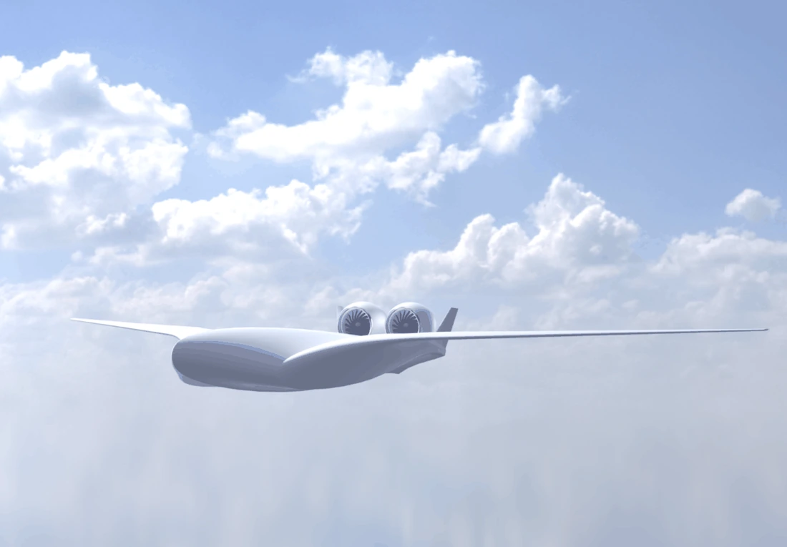

Senior Design · UCSD MAE 155A · 2026
Aircraft Conceptual Design
Blended Wing Body Airliner “Manta”
Fuselage as the lifting body, with a non-cylindrical cabin, aft-mounted high-bypass turbofans, and twin vertical stabilizers.
Read the design review (PDF)